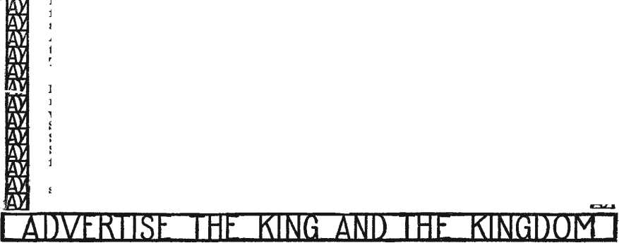

KINGDOM Oh HEAVhN IS Al HAND
December 1st, 1925.
The Call to Service
03 03 03 03 03 03 03 03
03 03 03
03 03 03 03 03 03 03 03
HE Lord .Tesus, our Master, had no thought that his people should be a company of more or less pious recluses, shut off from the world, given over to petty tasks and so-called holy meditations. He expected them to be active in the proclamation of the truth, and so active as to call for comment from Notice his statement of on the Mount:
those about them, this in the Sermon
the world. A city
“Ye are the light of that is set on a hill cannot be hid. Neither do men light a candle, and put it under a bushel, but on a candlestick; and it giveth light unto all that are in the house. Let your light so shine before men, that they may see your good works, and glorify your Father which is in heaven.”—Matthew 5:14-16.
In every neighborhood there are people that, so far as the neighbors can see, lead most exemplary lives. They commit no offences that anybody can take note of. They are quiet, orderly, industrious, peaceable. Are we to suppose that these are fulfilling the conditions of the scripture above cited? The answer is obvious.
Some of them are Turks, followers of Mohammed, peacefully engaged In selling rugs. Some are Chinese, doing laundry work for a living, followers of Confucius. Some are dealers in Japanese bric-a-brac, Shlntolsts. Many are Roman Catholics. Some are Christian Scientists. Are these fulfilling the Master’s command?
The only ones that can let their lights shine are those who have the light. The light they are to let shine is the light regarding the kingdom. At the first advent they were to go out proclaiming that the kingdom of heaven is at hand. They did so. In every corner of the Roman world they proclaimed that Jesus is the Messiah. This they did so effectively that at length the great Roman empire was compelled to take notice of what at first it only despised.
hap-
03
03
wick have
ment that will give life, liberty and piness to all who will!
Incidentally, it was not the candle that the Master wanted shown. Some
03 03 03 03 03 03
03 03
03
03
>3
03
05 03 03
Today the light is shining much more brilliantly than it was at the first advent. Earth’s rightful King has come in his power. If it was a blessed thing to announce the kingdom of heaven at the first advent, when membership in it was confined to the one person, Jesus of Nazareth, the King, how much more blessed is the present opportunity of proclaiming our risen and glorified Lord as earth’s rightful King, already present, engaged in the destruction of Satan’s empire, putting to flight the powers of darkness, and laying foundations broad and deep enough for a human govern-misunderstood this point. The wicks should be good wicks, clean wicks, wicks well filled with oil; but the thing that the Lord wants revealed is not the wick but that which comes through it, and which results when the wick is consumed; namely, the shedding forth of the light of truth toward those, who, however ^commendable their lives, are still in darkness as respects the plan of God.
03
03
03
03
03
03
03
December, 1925
At the beginning of 1925 it was pointed out that extra effort would be necessary in order that the work would show a marked increase over 1924. The year’s report of the activities of the Society shows tliat this extra effort was put forth by the workers In the field, and that the truth had a wider witness during 1925 than during 1924. Difficulties of a new sort had to be met during 1925, general depression throughout the country, and for the most part the workers reporting “No money”. 'To canvass from day to day with small results naturally •would tend to discourage rather than to encourage field work. The interest of the people, on the other hand, and a marked disposition on their part to listen to the truth was found generally. The field force seemed to Just meet the difficulties that were presented, with greater results, and hence 1925 stands out as a year of greater witnessing for the truth. The general increase in the work was more manifest, toward the ending of the year. The earlier months of the year did not permit so large a distribution of literature as did the later months. Likewise, a larger proportion of the sales during the later montlis were of the sets of Studies in the Scbiptubes, whereas the sales in the earlier part of the year reported a larger percentage of the Harp of God. From this we would conclude that the attitude of the people called upon is continually growing more favorable toward the truth; for with the Same amount of effort workers are now enabled to place a larger proportion of literature in the homes they call upon.
During the fiscal year ending October 1, 1925, the classes reported a total of 56,639 workers In the service throughout the year. This is a weekly average of 1,089 workers. Since our reporting of sales takes into consideration only the Habp Course and the Studies in the Scbiptubes, the average sale per week of the 1,089 workers amounted to 3,249 individual homes. The total number of bound volumes placed in the homes during 1925 was divided as follows:
|
Sets of eight volumes Sets of seven volumes Harp Study Courses TOTAL ’ |
6,132 9,401 153,414 168,947 |
|
Colporteur Report | |
|
Sets of eight volumes |
13,035 |
|
Sets of seven volumes |
7,557 |
|
Habp Study Courses |
139,063 |
|
TOTAL |
159,655 |
|
Sala of Booklets | |
|
Classes |
642,928 |
|
Colporteurs |
275,848 |
|
TOTAL |
918,776 |
|
I. B. S. A. Week | |
|
Sets of eight volumes |
541 |
|
Sets of seven volumes |
506 |
|
Habp Study Courses |
4,325 |
|
Harp of God |
5,638 |
|
Booklets, miso. vols. |
37,251 |
|
TOTAL |
48,259 |
|
Convention Report | |
|
Sets of Studies |
334 |
|
Habp of God |
5,371 |
|
Booklets, mlse. vol. |
25,628 |
|
TOTAL |
31,331 |
During 1925 there were approximately 64,899 more booklets sold than during 1924 and approximately 7,989 more Hasp Study Courses and 48 sets of Studies in the Scriptures. In the . colporteur branch of the service there was an average of 439 colporteurs and an average of 318 auxiliary colporteurs in theserviee throughoutthe year, making a total average of 756 colporteurs in the work during 1925. The colporteur branch of the service sold 5,059 more sets of Studies in the Scriptubes than did the class workers. However, the classes sold 4,351 more copies of the Harp of God than did the colporteurs.
Though the above figures indicate the sale of the publications of the Society, yet a much
greater work should be recognized in connection with the field service in the house to house canvassing. Workers going from door to door give a witness for the truth in their canvass; and during 1925 the workers called upon 1,415,875 homes witnessing to the truth. During 1925 class workers visited 33,000 more homes than during 1924. Regular colporteurs during 1925 visited approximately 4,032,000 homes, and the auxiliary colporteurs 804,000 homes. Hence the field force during 1925 visited 6,251,875 homes and, when the booklets are taken into consideration, placed literature in 1,014,217 of the homes visited. - A witness of the truth of this nature is more far-reaching than can really be measured. The truth is left in some tangible form. People will refer to the books already placed, and for the most part will be anxious for more literature that will Inform them along the lines that they have been reading since your visit. As great as the witness might seem, yet In the final analysis It means that during the past year of all the subjects that have been brought to the attention of the people, of all the ideas that they have considered and given time and thought to, only those in whose homes literature was placed permitted the subject of the truth to occupy their attention after the worker’s call. The larger proportion of the homes listened to a talk of approximately fifteen minutes on the subject of the truth, and aside from this they hear or know little of it for the remainder of the year, i'et as sorrows and perplexities come to their homes, they no doubt find more comfort and more real satisfaction in reflecting upon what you have told them than in the sum total of their reading of other subjects and In the satisfaction and contentment that they might have had temporarily from amusements, etc.
What the sale of the Hasp Bible Study Course and the booklets should mean to the workers Is that there is a greater number of homes anxious for the full testimony of the Lord's kingdom than in previous years. Approximately 292,477 more homes will have had the Habp Bible Study Course to consider, refer to and talk over during the interim of your call during 1926 than last year. These people will surely want to know about other publications of the Society; and you will find them interested in the 7-Volume offer of Studies in the Scriptures at your next call. Hence as you go from door to door in covering the territory, your alm would be to serve this vast number of people with complete sets of Studim IN THE SCBIPTUBES.
Additionally, 917,776 homes have during the past year purchased copies of booklets. Just what proportion purchased them with a view of determining the nature of the treatment of the Bible prophecies we are unable to even suggest;'but we believe it is fair to say that the larger proportion of the people who did not have the bound volumes and bought booklets, purchased booklets with this thought in mind. Hence if you can remember what was done in the territory at your previous call and can take up the subject of books where you left off at your last call, whether It was with the placing of the Harp Bible Study Course or the booklets, you will interest the people. Of course it would be Impossible to recollect what was placed in each home, and It would be almost impossible for the directors to supply this Information to the workers. The safest way, then. to take up your work exactly where you left It at the instance of your last call Is to canvass for the Studies in the Scriptures, offering the 8-Volume combination. The Harp then will identify the books to those who have purchased it, and your references to the signs of the times will Identify the books to those who have purchased booklets. It will also suggest to those who have purchased booklets the advantage of having the complete library in their homes; for if the booklet has contributed much to their comfort during the past year the library will contribute even more, because of the larger field that It serves.
The results during 1925 have been achieved by the workers’ meeting obstacles with greater confidence and with more determination to witness and raise a standard for the people. As each worker reflects upon the part he individually had, and may feel that it was a very small part as compared with great results, yet it was the assembling of such efforts on the part of all that made this witness possible. It is only by the efforts of each individual that the work stands out with such wondrous results and with such promising prospects for the forthcoming year.
Of the classes who obtained the greatest results in the field the first thirty are listed herewith. In considering the classes to be so listed the first consideration was the percentage of the class members who are actively engaged in the service each week of the year. The second consideration was the results that the workers of these classes were obtaining. Consequently this list names the classes who had the largest percentage of workers In the field and whose workers were the most successful in placing the literature in the class territory.
1325
1. Tulsa, Okla.
2. Bayonne, N. J.
8. Bennett, Colo.
4. Brooklyn Bethel.
6. Wynnewood, Okla.
6. Bremerton, Wash.
7. New Brunswick, N. J,
8. Watertown, N. Y.
9. Abilene, Kans.
10. Duluth, Minn.
11. Lansing, Mich.
12. Nanticoke, Pa.
13. Lawrence, Mass.
14. Pittsburgh, Pa.
15. Los Angeles, Calif.
16. Plymouth, Mich.
17. Benton Harbor, Mich.
18. Endicott, N. Y.
19. Easton, Pa.
20. Mitchell, S. D.
21. Wilson, N. C.
22. Oil City, Pa.
23. Boise, Idaho.
24. Lancaster, Pa.
25. York, Pa.
26. Bloomfield, N. J.
27. Detroit, Mich,
28. Port Huron, Mich.
29. New Philadelphia, Ohio.
30. Reading, Pa.
From the correspondence received at the office our observations of the work of 1925 are that considered from the standpoint of the workers there is an increased zeal manifest and greater Joy in their opportunities and privileges. The reports Indicate that the interest in the truth is not confined to those who purchased the literature, but is generally manifest in the field as a whole; and that the calling from door to door demonstrates that the people are turning rapidly to the truth. Comparison of the reports received from the workers during 1925 with those of previous years, shows that the disposition of the people to have confidence in the truth has been gradual, each year showing a marked trend of interest toward the message; and though we might expect that the reasonableness and beauty of the truth would appeal to a greater number, yet this gradual turning is for our encouragement and it Is this gradual growth of interest that holds forth such a promising view for 1926.
We trust that the Lord will greatly bless you during the forthcoming year, and that the opportunities for service will ever be on the increase, and that 1926 will provide you with the Joy and blessings of the service that will permit you to rejoice in the Lord and to find great comfort in the^ blessedness of Zion.
With Christian greetings, we are
Your brethren and servants in the Lord, Watch Tower Bible & Tract Society.
Service Dept.